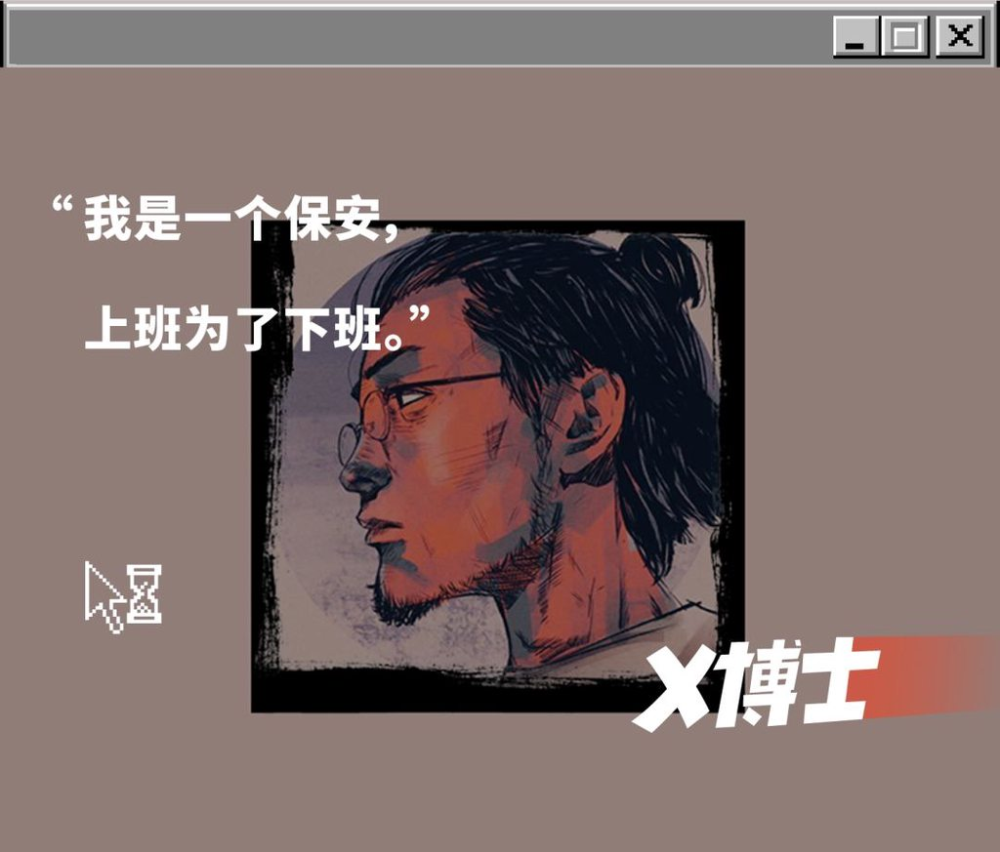

一位红遍中国互联网的青年保安陈义曾经说过：如果 2019 年你还没有从事保安，那你就真的 out 了！这句话从陈义那表情夸张的脸上的口中说出来有一股自嘲的味道，但是在今天这个时间复述这句话，却是意味深长而又富有远见的观点.
 青年保安陈义发表对职业的见解
人口密集的大城市：权力的真空
在当今的中国青年当中，非常流行一种价值观：宁愿在大城市做牛马，也不愿意回到老家做公仆。虽然并不是每一个人都同时拥有这两个选项。但总体上在年轻人的心中大城市绝对是优于小城市的，即使在小城市可以很容易地成家立业，过上下班陪着家人买菜做饭这样的现代“瓦尔登湖”式的生活；而在大城市只能蜗居在合租房内，挤着地铁 996, 有时间赚钱却没有时间去消费。我询问过一些人的看法，他们基本上都会提到在大城市拥有更多行为和思想上的自由，做任何事情不会受到他人的凝视和批判，大家都没有关系可找，总体相对公平。
为什么他们在大城市能够获得这样的“自由”？作为一位民间社会科学家（民科）, 我认为这样的自由来源于在大城市生活的年轻人处于一个“权力的真空”之中。这里说说的权力包含上帝的权力、凯撒的权力以及父亲的权力。
中国人心目中的上帝就是封建时代被尊为圣人的各位思想家，他们为统治者设计出来用于愚弄百姓的封建礼教，千年以后仍然在禁锢着大多数中国人的思想。而在城市，商品经济发达，资本家迫切的需要把人教育成一个消费的机器，这其中最主要的手段就是用新的思想和价值观来让人们放弃陈腐的封建礼教。在这样的时代潮流之下，上帝的权力在大城市完全失灵。
在西部的一个几百人的村庄里，村长、村长的亲戚、村长的朋友、村长的女人这一伙人加起来基本上就占了一个村的半壁江山，在这样的地方生存而你又不是他们的一份子，这个时候你将会如坐针毡、如芒刺背。在大城市里面一个街道的人口会比有些小县城比整个县的人还要多，但是里面仍然有着跟小城市几乎一样的政府架构，每一个政府机构需要管辖的居民人数相对于小城市要多得多。所以在在大城市里面政府的存在感相对较低，换句话说权力根本没空搭理这些盲目流入城市的年轻人，这样他们就感受到了权力真空中的自由。
在大城市生活，远离了你的父辈祖辈，远离了那些逐渐习得“爹味”的朋友，没有了倚老卖老向你灌输自己狭隘观点的”父亲”, 没有“父亲”让你学习敬酒和送礼的学问，也没有人能从敬酒和送礼这样的伟大科学中获利，你不会被裹挟着进入这样的浊流之中，你的生活自然是过的更轻松。
每一枚硬币都有两面，这个真空，对于你来讲是夹缝中的自由，但是对于权力来讲则是失控的隐忧。
瘟疫肆虐：权力下放及其寻租模式
瘟疫的大流行，让这个问题浮出水面。我们需要精细的社会防控，那就有很多的工作需要做：贴封条、分发蔬菜、组织做核酸、检查健康码; 这些看似简单的工作，对于那些手下管着几万人的干部而言，变成了不可能完成的任务。雇佣人员是一个可能的方案，但是对于一场和瘟疫之间的持久战，雇佣人员必然会导致执政成本的飙升，基层很快就会因为资金问题放弃防疫，这对于人民群众的健康将会是个巨大的威胁。最后本来就已经深入社区，从事社区管理工作的保安，进入了官员的视野，他们逐渐将社区管控的权力下放到保安头上。这样的权力下放起初并不顺利，因为一个人有权回到自己的家，这是天经地义的，现在把这样的一个权力下放到了一个没有爵位与官阶的保安手中，群众自然不会买账。同时这种权力的下放是很暧昧的，不是可以大张旗鼓发布红头文件公开授权的，于是保安和群众时常发生冲突，直到后来通过官方媒体强行推送了大量蓝底白字的对于和保安发生冲突的人员的处罚行为，这个权力的下放关系才变相得到了官方的认证。
知乎大 V 马前卒曾经断言：防控政策带来了额外的管理成本，相关人员身上多了一份责任，却没有相应的收益，这样的模式必然很快就会崩溃。但是马老师忽略了权力的附加价值，决定你能过进入小区大门这样一丁点的权力，就像是一个充满魔力的指环，使得这些保安疯狂地去踮起脚尖投射出觊觎的目光。
瘟疫时期的某一天下午，我在小区门口看见一个外卖员询问是否可以将快餐外卖送进小区内，门口的保安如日本战国时期的大名一般伸展着手肘坐在那因为瘟疫而为他们搭建起来的营帐内，他的身子一半在亮处一半在暗里，指了指旁边的铁架子，用君王般不怒自威的神情和语调，大声呵斥:“放这里!”. 那一刻我愕然了，外卖员和保安，本来是是能够在疲乏的工作之余互相递上一根“大前门”香烟，一起寒暄闲谈的阶级友人，但是此刻的保安有了这样一点能够决定他人是否可以进入小区的权力，就让这份革命友谊荡然无存。
鲁迅曾说奴才觉出美来了那便是十恶不赦了，我只能说鲁迅对奴才的认识比起我来还是不够深刻。当奴才必然是痛苦的，当奴才的同时要表演得不痛苦那更是痛苦中的痛苦，而他们仍然要心甘情愿的去做奴才，是因为只要你在此处奴才做得漂亮，那必然有另外一处能够让你过一把做君王的瘾。
没有寻租模式的权力毫无价值，保安也不例外，而保安偶然获得的这份不知何时收回的权力，其价值显然不如传统意义上的权力那样高。传统寻租学说当中常用的茅台、华子、甚至是美色姻亲用于保安属于是亏本生意，没有人会愿意做这笔买卖。作为长期被忽视被压迫的保安，他们对于追求精神层面价值的愿望要比其他的阶层更加迫切，所以在他向你宣告他手中的权力的时候，你露出一个谄媚的微笑；在他展示自己大权在握的威风时，你表现出绝对的服从，这对他来讲比跳进茅台的酵池中舔舐池底的酵泥还要香 114514 倍。
后瘟疫时代：保安能否继续参与权力的游戏？
这场瘟疫迟早要结束，但是我们永远面临着危机，随着中国经济的发展，迎接着中国的将会是一次又一次的阵痛，那些发达国家面临的问题，我们照样无法避免。后瘟疫时代，我们还有可能面临着恐怖主义、非法移民等问题，核酸检测和健康码会消失，但是我们可能还需要使用“恐怖码”和爆炸检测来保障社区的安全。
为了社会的安定，我们依然需要那些更加精细的管理制度，这些制度的执行离不开更多的人。那谁是合适的人选呢？比起熟读政治经济、国际关系、马恩列毛，却从来未曾去菜市场和小贩谈笑风生的大学生，保安无疑是更加合适的人选。论业务能力，保安比任何有编制的书记、街道办工作人员都要懂基层，他们知道小区里面哪一个老太太儿子在做官，他们知道哪一个业主在附近的小区还有别的房产，他们知道一个业主的车子出现在小区门口的时候应该以什么样的姿态和速度去开门。论工作资历，保安已经在瘟疫大流行中已经展现了其非凡的管理能力，即使是一件吃力不讨好的事情也会认真做好，这样的耿耿忠心比起精致利己的大学生，要胜出好几筹。让保安成为新的基层管理者是一条可靠、可行之路。
这场瘟疫和任何历史事件一样，终将结束，在那之后，这些在瘟疫中登上历史舞台的保安，面临的将会是被无情抛弃还是被看见、被认可、被重视呢？我没有预知未来的能力，所以这个问题我无法回答，大家一起拭目以待吧！
注：本文纯属胡说，性质为虚构创作，图一乐
Refs: